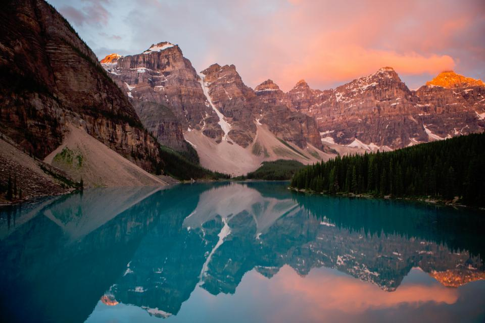
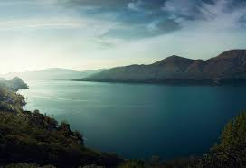
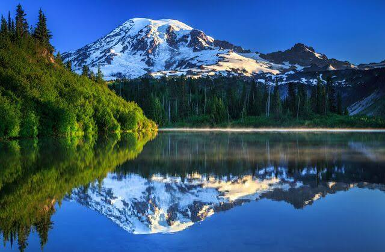
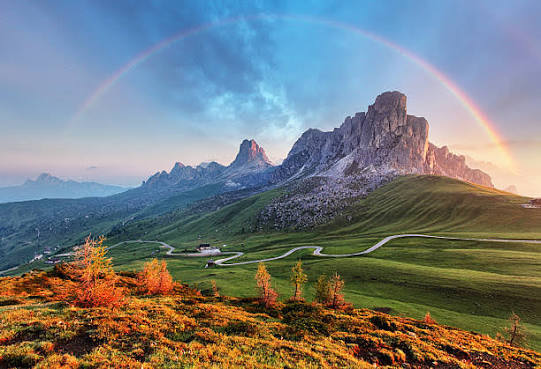
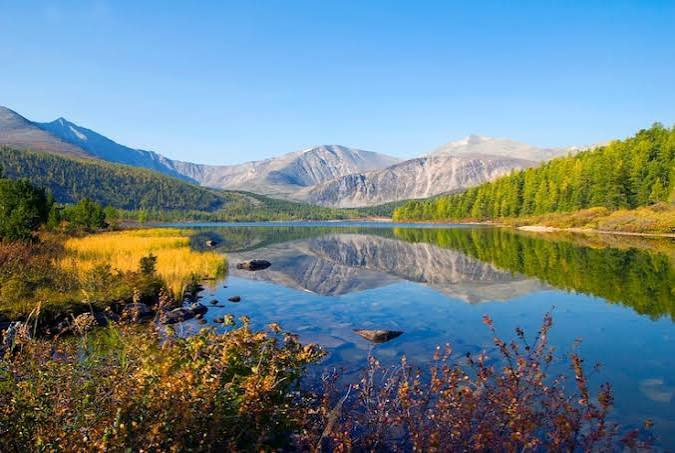
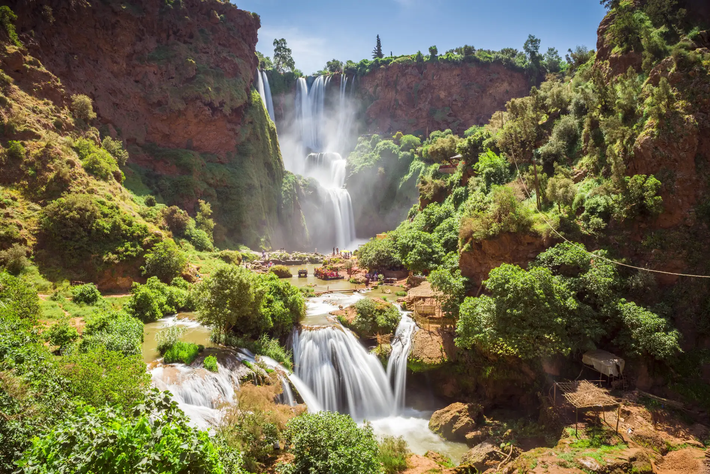

Sunset Over Wildflower Meadows
A vibrant meadow filled with pink wildflowers stretches toward distant mountains.
The warm sunset and dramatic clouds create a peaceful, magical landscape.

Turquoise Lake and Mountains
A crystal-clear turquoise lake reflects towering snow-capped mountains.
The calm water and surrounding pine forest create a breathtaking alpine scene.

Peaceful Green Valley
A lush green valley unfolds beneath a natural frame of ancient trees.
Rolling hills, forests, and open fields create a calm countryside atmosphere.

Serene Mountain Lake
A tranquil lake stretches beneath softly illuminated mountain peaks.
The muted colors and still water give the landscape a peaceful, dreamy feeling.

Majestic Mountain Reflection
A towering snow-covered mountain rises above a perfectly calm lake.
Its reflection creates a striking mirror-like view surrounded by dense greenery.

Rainbow Over Alpine Peaks
Dramatic rocky mountains rise above a colorful alpine landscape.
A vibrant rainbow arches across the sky, adding a magical touch to the scene.

Golden Valley by Mountains
A peaceful mountain lake reflects rugged peaks and surrounding forests.
Golden grasses and autumn foliage add warmth to the bright alpine landscape.

Waterfall Through Rocky Cliffs
Multiple cascading waterfalls flow through dramatic rocky cliffs and lush vegetation.
The rushing water and vibrant greenery create a spectacular natural setting.